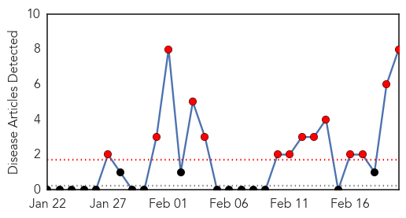

30 Day Trends
Web: 14 alerts, 0 warnings
Twitter: 0 alerts, 0 warnings
Top Articles:
- 0.989
- Meningitis vs. Meningococcal: Differences in Deadly Diseases
- 0.889
- Meningococcal disease outbreak feared at East Chapel Hill High School
- 0.800
- Benin trial shows vaccine need not be kept cold, can cost less
- 0.780
- NC high school student dies from meningococcal disease
- 0.769
- The Daily Reflector
- 0.701
- Memorial Set for Suspected Meningococcal Disease Victim
- 0.656
- Breaking the cold chain: Why ditching refrigerators is a big deal for Africa
- 0.585
- Officials take precautions after student's death from meningococcal disease
Top Tweets:
-
No tweets found for Feb 20, 2014
Web/News Articles
Tweets